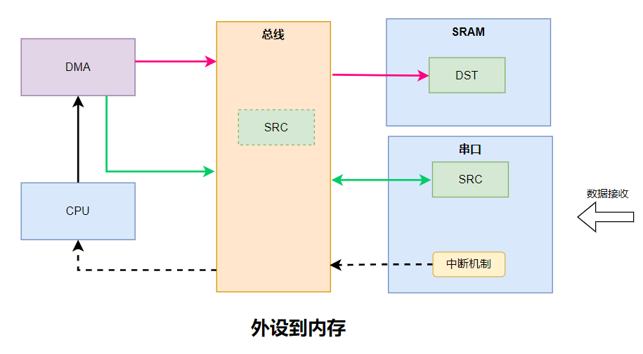
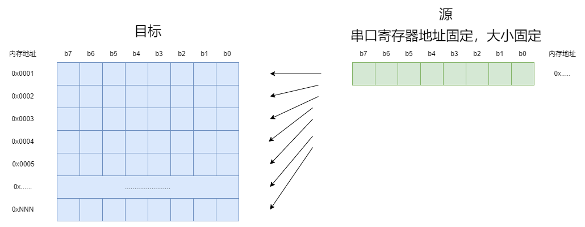

<!DOCTYPE lake>
<h2 data-lake-id="clAXq" id="clAXq"><span data-lake-id="u16c22c4f" id="u16c22c4f">学习目标</span></h2><ol list="u188a357d"><li data-lake-id="ub67125a7" fid="u7bdbacd8" id="ub67125a7"><span data-lake-id="uf2566fcc" id="uf2566fcc">加强理解DMA数据传输过程</span></li><li data-lake-id="uf797548c" fid="u7bdbacd8" id="uf797548c"><span data-lake-id="u40110edb" id="u40110edb">加强掌握DMA的初始化流程</span></li><li data-lake-id="u00b6cde8" fid="u7bdbacd8" id="u00b6cde8"><span data-lake-id="u09430fb9" id="u09430fb9">掌握DMA数据表查询</span></li><li data-lake-id="ud979d953" fid="u7bdbacd8" id="ud979d953"><span data-lake-id="ue366e623" id="ue366e623">理解源和目标的配置</span></li><li data-lake-id="u8adcb8e0" fid="u7bdbacd8" id="u8adcb8e0"><span data-lake-id="ud93b9f29" id="ud93b9f29">理解数据传输特点</span></li><li data-lake-id="ubff3ba5b" fid="u7bdbacd8" id="ubff3ba5b"><span data-lake-id="uf9b571ff" id="uf9b571ff">能够动态配置源数据</span></li></ol><h2 data-lake-id="BiUf7" id="BiUf7"><span data-lake-id="ua2c818cd" id="ua2c818cd">学习内容</span></h2><h3 data-lake-id="E2jZO" id="E2jZO"><span data-lake-id="u452697c4" id="u452697c4">需求</span></h3><span class="yuque-card-unsupported">[codeblock]</span><p data-lake-id="u7b813533" id="u7b813533"><span data-lake-id="u2be73663" id="u2be73663">实现串口的数据接收，要求采用dma的方式。</span></p><h3 data-lake-id="CZdgS" id="CZdgS"><span data-lake-id="ufd4f4008" id="ufd4f4008">数据交互流程</span></h3><p data-lake-id="ufe108475" id="ufe108475"></p><ol list="u8d5d15bf"><li data-lake-id="u1024676a" fid="u7c5d6f51" id="u1024676a"><span data-lake-id="u1820fdf5" id="u1820fdf5">CPU配置好DMA</span></li><li data-lake-id="u1d60f1f9" fid="u7c5d6f51" id="u1d60f1f9"><span data-lake-id="u50648725" id="u50648725">外部数据发送给串口外设</span></li><li data-lake-id="u465ab19d" fid="u7c5d6f51" id="u465ab19d"><span data-lake-id="ud38fc4ce" id="ud38fc4ce">串口外设触发中断</span></li><li data-lake-id="uec51d4cd" fid="u7c5d6f51" id="uec51d4cd"><span data-lake-id="u1e6bc75c" id="u1e6bc75c">CPU处理中断逻辑，通知DMA干活</span></li><li data-lake-id="u5b009ea0" fid="u7c5d6f51" id="u5b009ea0"><span data-lake-id="ub271bc89" id="ub271bc89">DMA请求源数据</span></li><li data-lake-id="ud28212cd" fid="u7c5d6f51" id="ud28212cd"><span data-lake-id="u14a7cd74" id="u14a7cd74">DMA获取源数据</span></li><li data-lake-id="ua17cb0fe" fid="u7c5d6f51" id="ua17cb0fe"><span data-lake-id="u93743e83" id="u93743e83">DMA将获取的源数据交给目标</span></li></ol><h3 data-lake-id="ayYkU" id="ayYkU"><span data-lake-id="u77ffb9bc" id="u77ffb9bc">开发流程</span></h3><h4 data-lake-id="Ee1EY" id="Ee1EY"><span data-lake-id="ua943bbf2" id="ua943bbf2">依赖引入</span></h4><p data-lake-id="u918a962f" id="u918a962f"><span data-lake-id="u2f1e05a6" id="u2f1e05a6">添加标准库中的</span><code data-lake-id="ue04edabb" id="ue04edabb"><span data-lake-id="u184b10d5" id="u184b10d5">gd32f4xx_dma.c</span></code><span data-lake-id="u0dbaf24d" id="u0dbaf24d">文件</span></p><h4 data-lake-id="KGhto" id="KGhto"><span data-lake-id="u2c3a0671" id="u2c3a0671">DMA初始化</span></h4><span class="yuque-card-unsupported">[codeblock]</span><ol list="uee63f6d4"><li data-lake-id="u35b29cdc" fid="u75adf601" id="u35b29cdc"><span data-lake-id="ub017c018" id="ub017c018">配置时钟</span></li><li data-lake-id="u71358cbc" fid="u75adf601" id="u71358cbc"><span data-lake-id="u3c82a80d" id="u3c82a80d">初始化dma通道</span></li><li data-lake-id="u1d4f580b" fid="u75adf601" id="u1d4f580b"><span data-lake-id="ud89b1d31" id="ud89b1d31">配置dma与外设间的子链接</span></li><li data-lake-id="ua1467fdc" fid="u75adf601" id="ua1467fdc"><span data-lake-id="u263034c6" id="u263034c6">开启dma接收功能</span></li></ol><h4 data-lake-id="ZK7mP" id="ZK7mP"><span data-lake-id="u4cf17390" id="u4cf17390">接收中断</span></h4><span class="yuque-card-unsupported">[codeblock]</span><ul list="u1fcdceab"><li data-lake-id="uf76445ef" fid="u48aff950" id="uf76445ef"><span data-lake-id="u791a8cd2" id="u791a8cd2">dma_channel_enable： 请求dma数据传输</span></li><li data-lake-id="u23a03449" fid="u48aff950" id="u23a03449"><span data-lake-id="u957356dd" id="u957356dd">DMA_FLAG_FTF：为传输完成标记</span></li></ul><h4 data-lake-id="Gb6o9" id="Gb6o9"><span data-lake-id="u791923cc" id="u791923cc">串口外设DMA开启</span></h4><span class="yuque-card-unsupported">[codeblock]</span><ul list="uae35ca7a"><li data-lake-id="ua38fc09f" fid="u4acc99f4" id="ua38fc09f"><span data-lake-id="u01f723a7" id="u01f723a7">需要开启dma接收配置，才可以打开dam的功能</span></li></ul><h4 data-lake-id="I7cPp" id="I7cPp"><span data-lake-id="uc315e22e" id="uc315e22e">完整代码</span></h4><span class="yuque-card-unsupported">[codeblock]</span><h3 data-lake-id="BZwJW" id="BZwJW"><span data-lake-id="uffcbc44c" id="uffcbc44c">关心的内容</span></h3><span class="yuque-card-unsupported">[codeblock]</span><ul list="ubadb7fad"><li data-lake-id="u49c2b3ae" fid="u6558784b" id="u49c2b3ae"><span data-lake-id="u0e6e4c65" id="u0e6e4c65">哪个dma：DMA0或者DMA1</span></li><li data-lake-id="u710f51b8" fid="u6558784b" id="u710f51b8"><span data-lake-id="u1afe264b" id="u1afe264b">dma的哪个通道：ch0到ch7</span></li><li data-lake-id="u1fa53975" fid="u6558784b" id="u1fa53975"><span data-lake-id="uae7bf062" id="uae7bf062">dma的哪个子级：0到7</span></li><li data-lake-id="u6e8c6491" fid="u6558784b" id="u6e8c6491"><span data-lake-id="u4cb28847" id="u4cb28847">传输方向是什么：内存到内存，内存到外设，外设到内存</span></li><li data-lake-id="ud4d081a7" fid="u6558784b" id="ud4d081a7"><span data-lake-id="u85ace0be" id="u85ace0be">源地址是多少？源的数据长度是多少（几个byte）？源的数据宽度是多少（几个bit）？</span></li><li data-lake-id="u25fecb22" fid="u6558784b" id="u25fecb22"><span data-lake-id="u1df82e89" id="u1df82e89">目标地址是什么？</span></li><li data-lake-id="u8eaf847c" fid="u6558784b" id="u8eaf847c"><span data-lake-id="u902b96e7" id="u902b96e7">从源地址向目标地址传输数据时，源地址的指针是否需要增长。</span></li><li data-lake-id="u259eb62e" fid="u6558784b" id="u259eb62e"><span data-lake-id="uf0eed1b1" id="uf0eed1b1">从源地址向目标地址传输数据时，目标地址的指针是否需要增长。</span></li></ul><h3 data-lake-id="IMhwB" id="IMhwB"><span data-lake-id="ud9940bb4" id="ud9940bb4">串口接收理解</span></h3><p data-lake-id="ua0376242" id="ua0376242"></p><h4 data-lake-id="xUihm" id="xUihm"><span data-lake-id="ue50adfa6" id="ue50adfa6">地址和目标地址</span></h4><p data-lake-id="u7811170d" id="u7811170d"><span data-lake-id="u43092e0b" id="u43092e0b">源地址和目标地址都是提前配置好的，当传输时，就会从源地址将数据传递给目标地址。</span></p><h4 data-lake-id="rQlRR" id="rQlRR"><span data-lake-id="uaf397a67" id="uaf397a67">自增长</span></h4><p data-lake-id="u8da0164c" id="u8da0164c"><span data-lake-id="ua3c0bf15" id="ua3c0bf15">每传输一个字节数据，地址是否需要增长。这里包含了源地址是否需要增长，也包含了目标地址是否需要增长。</span></p><p data-lake-id="u83fd020b" id="u83fd020b"><span data-lake-id="u164b86fb" id="u164b86fb">串口中，寄存器地址不变，大小不变，</span><strong><span data-lake-id="u930f0d45" id="u930f0d45">我们只是向这个里面放数据，所以不需要增长。</span></strong></p><h4 data-lake-id="rOgbp" id="rOgbp"><span data-lake-id="u66feb475" id="u66feb475">数据宽度</span></h4><p data-lake-id="ub5a98651" id="ub5a98651"><span data-lake-id="u90892b02" id="u90892b02">数据宽度表示一次传递多上个bit</span></p><h4 data-lake-id="kftka" id="kftka"><span data-lake-id="uf5ef318d" id="uf5ef318d">数据长度</span></h4><p data-lake-id="ua905e8b5" id="ua905e8b5"><span data-lake-id="u9184edf4" id="u9184edf4">传输了多少个数据宽度的数据。</span></p><p data-lake-id="u007c5542" id="u007c5542"><span data-lake-id="u75742054" id="u75742054">​</span><br/></p><h2 data-lake-id="IyY3u" id="IyY3u"><span data-lake-id="u3bb3a4c1" id="u3bb3a4c1">练习题</span></h2><ol list="u08c86def"><li data-lake-id="u617e49bb" fid="ubfbe7dfb" id="u617e49bb"><span data-lake-id="u291e3262" id="u291e3262">实现dma的串口接收</span></li></ol>